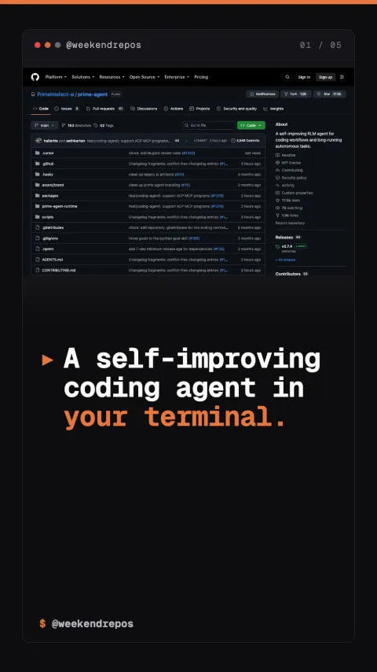

prime-agent
An open-source RL coding agent that tests and self-corrects code

A self-improving coding agent in your terminal.
Executes code inside isolated Docker execution environments.
Prime Agent spins up lightweight Docker sandboxes for each task, executing tests and capturing runtime stack traces before touching your repository.
sandboxed container isolation · zero host risk
Reinforcement learning loops iterate until all unit tests pass.
Using reinforcement learning feedback, it inspects failing assertions, refines its solution, and re-runs the test suite until everything passes.
iterative self-correction · verified test passes
Supports Claude 3.7 Sonnet, DeepSeek R1, and local models.
You can plug in frontier reasoning models or run completely offline with local Ollama weights, keeping your codebase entirely private.
multi-model support · DeepSeek R1 · local Ollama
Open-source on GitHub with Apache 2.0 license.
Prime Agent is completely open-source, giving you full control over agent workflows without proprietary cloud lock-in.
github.com/PrimeIntellect-ai/prime-agent · Apache-2.0